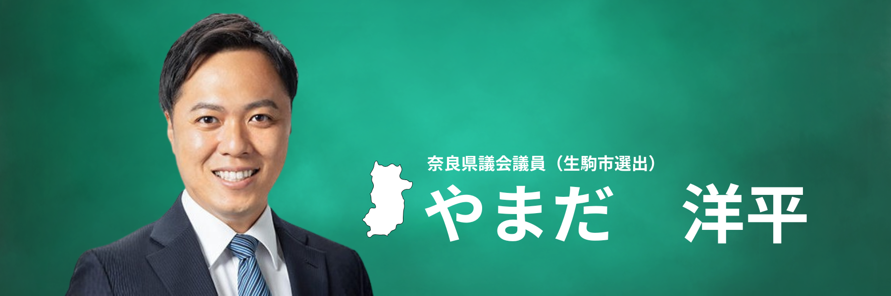
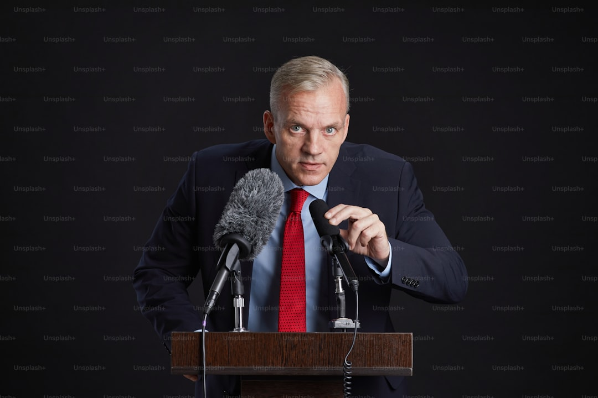
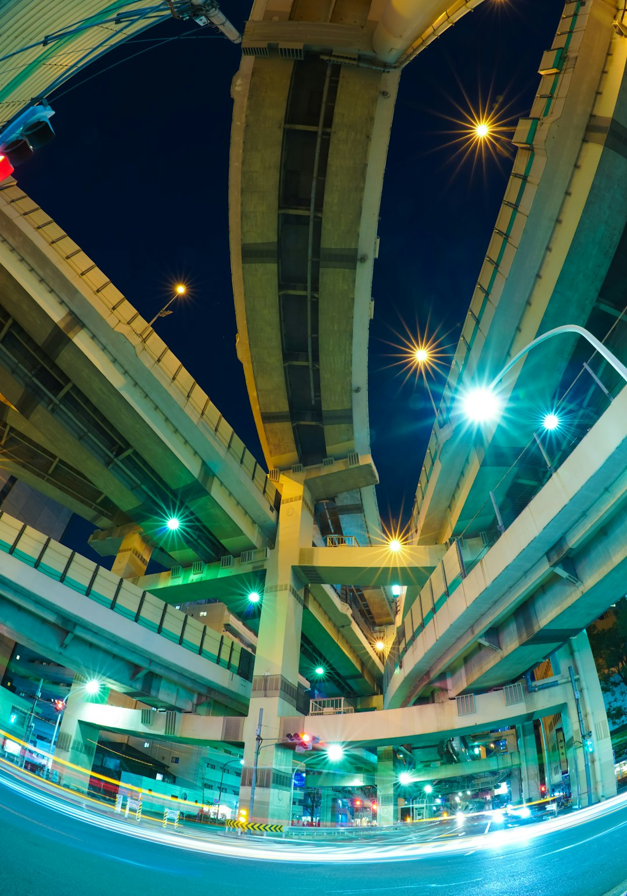
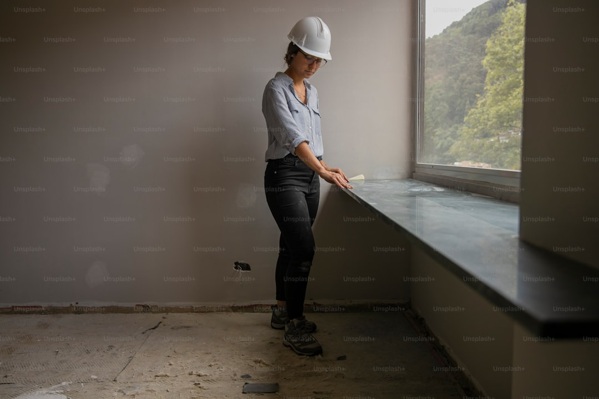

公認会計士の眼で、奈良の家計を立て直します。
人生、逃げ場はありません。
次世代に責任を持てる奈良を、いま、一緒に創っていきましょう。
生駒で育ち、生駒で親となり、生駒の未来を、県政の場から支えます。
- 公認会計士・税理士
- 政務活動費 全額返還（2023年度）
- 議員報酬 自主削減 累計125万円以上
活動報告や議会の要点はLINEで発信しています。登録無料。
LINEで活動報告を受け取る政策
議会や街頭、地域の現場でいただいた声を、具体的な政策に落とし込みました。口約束ではなく、数字と仕組みで実現を目指します。

-
01
身を切る改革を、自ら実行します。
政務活動費は2023年度、全額を県に返還。議員報酬も自主削減し、累計125万円以上を被災地支援などに充てています。
詳しく見る -
02
税金の「番人」として、公的機関の経営を問います。
建設費・運営費がかさむ施設、県立病院機構の巨額赤字、資産の有効活用。会計士の眼で精査し、改善を求め続けます。
詳しく見る -
03
生駒の交通と暮らしを、快適にします。
辻町ICのフルランプ化、自走式ロープウェイ「Zippar」など次世代交通の検討を進めます。
詳しく見る -
04
教育・福祉・医療を、次世代と現場から支えます。
教育の機会均等、難病・がん対策や障がい者支援、医療現場の環境改善に議会で発言を続けます。
詳しく見る -
05
「稼ぐ奈良」へ。観光と産業を、持続可能にします。
観光施設の経営改善、スタートアップ支援、宿泊税など新たな財源の議論を進めます。
詳しく見る
実績
口先だけでなく、数字と行動で示します。改革を、具体的な「数字」で証明しています。
政務活動費 全額返還（2023年度）
議員報酬 自主削減 累計
-
NAFIC（なら食と農の魅力創造国際大学校）の追及
建設費17億円、年間運営費2億円をかけながら定員割れが続く現状を、議会で厳しく問いました。
-
県立病院機構 42億円の赤字への提言
巨額赤字に対する経営責任と、今後の立て直し方針を、本会議で質しました。
-
生駒の現場から
辻町ICのフルランプ化、矢田山遊びの森の改善要望、生駒警察署新庁舎の整備。地域の声を議会と県庁に届け続けています。
議会活動
難しい予算や事業を、「会計士の眼」で読み解き、どこに課題があるかを可視化する。そのうえで、建設的な対案を出し、県政を前に進める役割を果たします。
Yohei's Check（議会追及録）
本会議や委員会での質問・提言の要点をまとめて発信しています。県の「お金」と「仕組み」がどう動いているか、サイトで確認できます。
主なテーマ
- 公的機関の経営健全化（県立病院機構、NAFIC、観光施設など）
- 金利上昇リスクや新財源（宿泊税など）の議論
- 消防学校・警察学校の施設整備、治安維持の効率化
- 次世代交通（Zippar）や地域公共交通の将来
- 教育・福祉・医療人材の確保と労働環境
活動
議会での質問や視察、地域の現場での活動を、随時報告しています。生駒の「小さな困りごと」にも、歩いて向き合います。


今後の予定（例）
- 定例会での一般質問（奈良テレビで放送されます）
- 矢田山遊びの森や辻町ICなど、生駒の課題への継続的な取り組み
- スタートアップ支援や難病・がん対策の関係団体との対話
- 高校生議会など、若い世代との交流
活動報告（Ikoma Action Diary など）
地域の公園整備、交通、防犯、子育て支援。地元でいただいた声を、写真とともに記録し、発信しています。
山田洋平 プロフィール
山田 洋平（やまだ ようへい）
1986年5月20日生まれ。奈良県生駒市出身。
- 現在
- 奈良県議会議員（生駒市選出）
日本維新の会 奈良県総支部 - 所属委員会等
- 文教くらし委員会、奈良県国土利用計画審議会 委員、奈良県難病対策推進議員連盟、奈良県議会がん対策推進議員連盟
- 経歴
- 生駒市立俵口小学校、生駒市立生駒中学校 卒業／大阪星光学院高等学校、神戸大学法学部 卒業／公認会計士・税理士／有限責任あずさ監査法人 勤務／山田洋平公認会計士・税理士事務所 代表
- 家族
- 妻、長男（3歳）、長女（2歳）、猫
- 座右の銘
- 人生、逃げ場なし。
後援会・LINE
奈良の未来を、一緒に。活動報告や議会の要点はLINEで発信しています。ご意見・ご要望はこちらから。登録無料。
収支報告は1円まで透明に公開しています。維新の「透明性」を、会計士のスキルで実践しています。